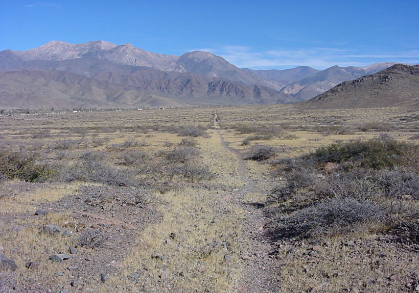

Existen cientos de kilómetros de caminos arqueológicos en excelente estado de conservación que pueden transformarse en un atractivo para los que gustan disfrutar del trekking
- Por Christian Vitry, Montañista y Antropólogo - Fotos: Christian Vitry Restauración Fotográfica: Centro Cultural Argentino de Montaña, Natalia Fernández Juárez |
“Las obras más importantes que permitieron la expansión territorial y luego el establecimiento de la organización del incario fue, a no dudarlo, la construcción de una vasta red caminera que implicaba puentes, tambos y depósitos. Pocas naciones podían vanagloriarse en el siglo XV de poseer tan fantástico complejo vial como el Tahuantinsuyu.”
(M. Rostworowski, 1988:87)

Vista de Cachi, Salta
Si realizar una caminata por los bellos paisajes que atesora nuestra cordillera una experiencia inolvidable, que decir entonces si dicho paseo se hace transitando por el legendario camino del Inca, que fuera motivo de admiración de conquistadores, investigadores y cuanta persona tuvo oportunidad de conocerlos y caminarlos. Pocos saben que en el noroeste argentino existen cientos de kilómetros de caminos arqueológicos en excelente estado de conservación que, de ser adecuadamente tratados, pueden transformarse en un atractivo turístico de primer nivel, especialmente para los que gustan disfrutar del trekking o senderismo por comarcas montañosas.
Payogasta en Cachi, Salta

Quipon, Valle Calchaquí, Salta
Este legado patrimonial de las culturas americanas precolombinas se ha conservado hasta nuestros días casi intacto en muchas partes, no pudiendo uno salir del asombro ante tanto ingenio constructivo y conocimiento del terreno. Se los puede seguir a lo largo de cientos de kilómetros por los variados ambientes del noroeste argentino, desde el yermo paisaje puneño, pasando por los semiáridos valles Calchaquíes, siguiendo por el fértil y templado Valle de Lerma, hasta las postrimerías de las húmedas Sierras Subandinas. Paisajes tucumanos y catamarqueños de la cuenca del Yocavil o Santa María, Famatina en La Rioja el occidente de la provincia de San Juan y el Norte de Mendoza son poseedores de estas huellas de nuestros antepasados. Caminos que oscilan entre los 2 y 3 metros de ancho, cuyas características constructivas varían desde la simple limpieza o despejado del terreno y amojonado lateral, hasta caminos empedrados, enlajados, con canales y sofisticados sistemas de desagüe, como también con escalinatas esculpidas en la roca viva o construidas con rocas trabajadas para tal fin. Existen caminos que ascienden por pendientes que oscilan entre los 40 y 70 grados de inclinación, donde los laboriosos constructores debieron cortar la roca de la ladera o amurallarla para que éste pase. Como en Perú, en el NOA también existen puentes de madera y roca, que salvaban vanos de las quebradas y cárcavas profundas. Además, caminos que conducen hasta los elevados santuarios de altura, como el caso del volcán Llullaillaco (6.739 m), el Nevado de Chañi (5.900 m), Nevado de Cachi (6.380 m), Nevado de Acay (5.716 m), el volcán Socompa (6.080 m) entre otros.
A pesar de los miles de kilómetros en que se entretejen estos caminos arqueológicos, (desde Ecuador hasta Santiago de Chile) existen similitudes constructivas que los hacen característicos y únicos. Donde el terreno era aplanado los Incas trazaban una línea perfecta, a veces de varios kilómetros como el caso de la recta de Tin Tin en los Valles Calchaquíes, actual Ruta Provincial Nº 33, que fuera otrora camino precolombino; otro elemento distintivo, fue el de unir dos puntos o localidades empleando la menor distancia posible, sin por ello olvidar u obviar la disponibilidad de agua y la menor inclinación del terreno. Las diferentes técnicas aplicadas a la construcción de estos caminos, se adaptaban sobremanera a los viajeros, cuyo objetivo se orientaba a reducir a la mínima expresión el esfuerzo y desgaste físico.
Cerro Amarillo, Calilegua, Salta
Escalinatas del camino inca. Calilegua, Salta
John Hyslop (1992) fue el arqueólogo que más se dedicó al estudio de la vialidad imperial; él estima que los caminos arqueológicos vinculados con el período incaico, tienen una extensión aproximada de 23.000 Km, los que atraviesan gran parte de los países andinos y representan “la mayor evidencia arqueológica de la prehistoria americana”. El Qhapaq ñan o Inka ñan (camino del Inca), era mucho mas que una vía de comunicación que unía los diferentes pisos ecológicos de la vasta geografía del Tahuantinsuyu, representaba la presencia simbólica del poder y autoridad del Estado Inca. El camino estaba exclusivamente destinado a tareas estatales, y existía un riguroso control mediante puestos de peaje, de observación y de vigilancia distribuidos de manera equidistante y conectados visualmente entre sí. Los caminos incaicos fueron construidos con una finalidad práctica en función del tráfico pedestre de hombres y llamas que, con su capacidad de transportar hasta 30 y 40 Kg en su lomo, eran muy utilizadas para el traslado de minerales y productos de toda índole entre diferentes regiones del imperio.
Los caminos en el N.O.A. estuvieron asociados a la actividad minera en las zonas altas, y a la agricultura en las bajas, también a fuentes de aguas termales. De todas estas características, quizá la más significativa sea la asociación de los caminos con la minería debido, principalmente, a la riqueza de la región.
Los caminos incaicos poseen una gran riqueza patrimonial, su estudio arrojó nuevos datos para el registro arqueológico, hecho que propone una revisión para todo el ámbito andino. El excelente estado de conservación de numerosos tramos del camino del Inca en nuestras provincias del NOA posicionan a la región en un lugar de privilegio en el ámbito andino, lo que estimula la investigación y sugiere la socialización y difusión de los mismos, mediante la creación de un museo al aire libre, a través de circuitos pedestres que permitan un acercamiento con la cultura incaica y a la vez una lectura de los paisajes pretéritos cargados de significaciones.
Transitar por el pétreo derrotero construido por el Inca, permite transportarse a través del tiempo y recorrer la rica historia y geografía cultural de este confín andino.
John Hyslop, pionero de los caminos incas
Hablar de caminos incas es hablar del investigador norteamericano John Hyslop (1945-1993), que durante dos décadas recorrió la vasta geografía del antiguo Tawantinsuyo (estado inca) en busca de los legendarios caminos de los hijos del sol, tan nombrados por los cronistas españoles y románticos escritores, como en la actualidad que se está trabajando para declararlos Patrimonio Cultural de la Humanidad ante la UNESCO.

Camino del Inca, Valle Calchaquí, Salta

Camino del Inca, Quebrada del Toro, Salta
Camino del Inca, Nazareno, Salta
John Hyslop inició la etapa más importante de su carrera profesional junto a los arqueólogos John Murra y Guillermo Lumbreras, quienes en 1973 aceptaron su incorporación en un proyecto de investigación para que estudie, analice y coordine datos históricos y arqueológicos de la región del Lago Titicaca. Parte del trabajo allí realizado sirvió para su tesis doctoral, cuya disertación fue en 1976 en la Universidad de Columbia con el trabajo “Una investigación arqueológica del Reino Lupaca y de sus orígenes”. En este proyecto, entre otras actividades de campo, realizó un reconocimiento de los caminos incas que pasaban a través de las principales poblaciones de la región, fue el inicio de un proyecto que lo llevaría a recorrer y estudiar tramos de caminos en Ecuador, Perú, Bolivia, Argentina y Chile.
Hyslop con mucha originalidad y relativamente escasos recursos tomó como problemática de estudio a la red vial inca. Se valió de caballos, mulas, motocicleta, camiones locales, ómnibus comunales y todo transporte que lo acercara al objeto de estudio.
Dotado de un especial carisma, contagioso entusiasmo y gran generosidad incorporó en su proyecto a estudiosos de cada uno de los países andinos, con quienes publicó los resultados parciales de su gran obra de síntesis.
Camino del Inca, Nazareno, Salta
A diferencia de muchos científicos, Hyslop se valió de todo tipo de fuente de información, especialmente las publicaciones regionales que le aportaron valiosos datos para las campañas. En Salta, junto a Pío Pablo Díaz entonces Director del Museo Arqueológico de Cachi, recorrió e investigó los tramos ubicados en las nacientes del calchaquí, donde esta región se vincula con la agreste Puna.
Su principal obra es “The Inka Road System” (1984) donde con sumo detalle describe, analiza y ordena los datos referentes al sistema de caminos incas, esta obra fue traducida al castellano con algunas modificaciones en 1992 bajo el título “Qhapaqñan. El sistema vial inkaico” publicada en Perú. Su trabajo es el referente obligado cuando cualquier persona interesada en la temática desea comprender el sistema vial inca. Casi un centenar de artículos publicados en revistas científicas y libros dan cuenta de su importante aporte en tan poco tiempo, su prematura muerte a los 48 años dejó un vacío en la temática que recién ahora, varios años después, y gracias al silencioso trabajo de numerosos arqueólogos en diferentes países de los Andes se está empezando a retomar.
Christian Vitry en el camino del Inca, Orán, Salta
En el Potrero, Payogasta, Salta
Christian Vitry en la Quebrada del Toro, Salta
Vista de la Quebrada del Toro, Salta
Quebrada del Toro, Salta
Quebrada del Toro, Salta
Christian Vitry en la selva de Orán, Salta
Santa Victoria Oeste, Salta
Santa Victoria Oeste, Salta
Escalinata en Santa Victoria Oeste, Salta
Área Restauración Fotográfica del CCAM: Natalia Fernández Juárez
Notas Relacionadas:
- El Camino Inca del Volcán de Llullaillaco
- El Camino Inca QHAPAQ ÑAN declarado Patrimonio Cultural de la Humanidad por la UNESCO
- Presentaron los avances del programa "Qhapaq Ñan" Camino del Inca
- Postulan al Camino del Inca como patrimonio mundial
Es nuestra misión dar a conocer la Cultura de Montaña Argentina y por lo tanto es prioritario que si es utilizado nuestro material visual, acuerden con la institución su uso. Si están interesados en el material fotográfico del CCAM, le sugerimos que se contacten a: info@culturademontania.org.ar
Todo el material fotográfico del CCAM es restaurado y publicado en alta resolución.